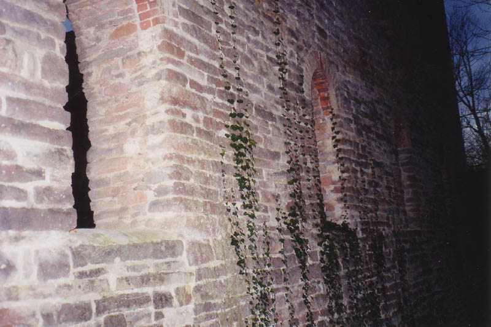
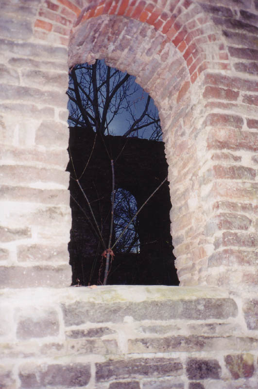

The ruins shown in this section are probably the oldest standing part of Forgotten Ohio I've profiled, hard as that is to believe. It's very difficult to find historic ruins in our state to parallel these, unless they're marked with an informative metal sign and administered by an historical society. (The old Ohio State Penitentiary was built in 1834, but its age and historical significance were widely discussed, especially during the debate surrounding its final demolition in 1998. Just one year before I really got serious about doing this stuff! Tell me that timing doesn't suck.)
It's an incredible fact that newcomers of European ancestry were inhabiting this settlement on the eastern edge of the Whetstone (now Olentangy) River even before Ohio achieved statehood under Thomas Jefferson. It was a time when this was considered a dangerous wilderness, the farthest western reaches of our nation and the fiercely disputed hunting ground of tribes of savage Indians. Those pioneers built the first meager village on this site in 1801 and called it Liberty Settlement.
A mill town similar to Carpenter's Mill, circa 1890
In 1804, just a year after statehood, the first mill in Delaware County was built at Liberty Settlement, along the bank of what was then called the Whetstone River. It was a combination sawmill and gristmill. Between 1814 and 1819 a sawmill was built slightly downriver from Liberty, followed by another at the same location: a stone structure built by Jones, Gunn & Co. and later operated by James Henkle as a woolen factory.
Examples of types of mills: sawmill, gristmill, flourmill
By 1832 the area had so many families--mill managers and employees and their families, plus the proprietors of the small businesses that served them--that the villagers were granted a post office. The name of the town officially became Carpenter's Mill. Post offices in those days lent a town official status and a sort of cohesion--a center where people collected their mail in the days before Rural Free Delivery, and transacted other business. Many of Ohio's least remembered ghost towns were little more than a single post office surrounded by a handful of locals, often in operation for less than a year. The post office at Carpenter's Mill remained until 1837.
In 1843-44 a gristmill was added to the ever-growing cluster and later run by Peter (sometimes listed as James) Bieber, who then replaced the wooden building with a sturdy stone structure and operated both a sawmill and a gristmill at the same time. With the addition of yet another one, built by James Cellar on the opposite side of the Wheststone, Carpenter's Mill established itself as an important industrial center of the mid-nineteenth century. The Biebers grew fat and rich off the income from their mills; they built others in Marion and Cincinnati and elsewhere around the state and lived comfortably in Marion, where the local newspaper (the same Daily Star later owned by Warren G. Harding) reported their every social move, business transaction, and cold or sniffle. For example:
-
"Peter Bieber, who has been ailing for about a week, is better today."
-
--December 10, 1880
-
"Peter Bieber the miller, is adding a beautiful pony burr to his fine mill for the purpose of grinding middlings. It is now ready for operation and will do good work."
-
--February 18, 1881
-
"Peter Bieber, the main miller of this city, who has been ailing and suffering from contracted cold, is out again and looking well; also says he feels quite well. Mr. Bieber is one of Marion's best men, and highly respected. May he long be spared to be among us."
-
--March 11, 1881
-
"The P. Bieber Flouring Mill is now crowded to its utmost capacity, and is most of the time. His miller, Mr. McClure, is doing as good work as is done in Ohio, and is fast becoming noted for this good work. Mr. Bieber keeps none but good, careful men in his employ. Mr. Charley Moss, his engineer, is one of the most diligent and efficient in that capacity in this city, or any other. In short, the Bieber Flouring Mill is the mill that 'takes the cake'."
-
--September 23, 1881
The notice of Peter Bieber's death in the Marion Daily Star, dated September 9, 1885, reads as follows:
"Obituary. Mr. P. S. Bieber, one of Marion's pioneer Business men, died at his residence on Railroad street, Wednesday afternoon. Mr. Bieber was one of our best known residents, a man of sterling worth, who leaves behind him a large circle of friends. Mr. Bieber was born in Columbia county, Pa., in 1822. He moved from his birthplace to Delaware in 1863, and to this city in 1865, when he went into the milling business, in which he was engaged at the time of his death. His death was caused by a complication of diseases, from the effects of which he has been slowly sinking the past two weeks. The deceased leaves a wife and four children to mourn his loss. The funeral services will be held at the M. E. church, Friday morning, meeting at the house at 10 o'clock. Interment at Gospel Hill."
The Bieber family plot lies in Vesper Grove, Lot 19 of Marion Cemetery, which is also known for its Harding Presidential Gravesite, and the mysterious moving Merchant Ball. The barely-legible epitaph pictured here was borrowed from a (now defunct) genealogy website run by descendants of the Biebers.
Bieber's Mill is the one whose skeletal shell still looms at the riverside, as pictured above. It's the one that first attracted me to the site and inspired me to research its history. Anyone travelling State Route 315 in Delaware County might notice it across the Olentangy River, just barely south of the place where 315 terminates at State Route 23. It's an impressive sight, especially seen across the water when the leaves are off the trees, and it gives the impression of being very, very old--which it is, though nothing actually stands from the original Liberty Settlement of the 1801 era.
By replacing a wooden mill with such a well-built stone one, Bieber left a three-story artifact that survives into the twenty-first century. The heavy-duty construction of the building is apparent when you get close to it and examine the way the massive stone blocks are fitted together. Window apertures gape completely barren of wood or glass, giving the place the look of a ruined castle.
Though it's most noticeable from the very busy 315 (aka Olentangy River Road), Bieber's Mill is only accessible by crossing the river on 23 and doubling back on Chapman Road, the smaller byway which follows the eastern bank of the river. There are only a few houses on Chapman Road, expensive homes that front the river, and one of them stands just a few feet away from the ruins of Bieber's Mill. On my visits there with friends between 2002 and 2005 we always found it easy to pull over beside the low fence there and stumble down through the wooded growth to study the mill up close, and we were never bothered. This isn't to say that it's not, technically speaking, trespassing; the Ohio Department of Natural Resources apparently manages the site, and they've boarded over the rear door, which you can approach by climbing a few worn stone steps, as well as the ground-level window holes. Paper warning signs are stapled to each telling you to go away.
But it's not difficult to gain access to the interior, provided you're able to boost yourself up and through a window about six feet off the sloping ground. The way the mill was built into the slope above the river means the lowest part of the front is flooded when the water level is high, while the back door opens onto what seems like the second floor. Halfway down you can easily reach a couple of windows located just about six and a half feet high.

Inside the stone shell, the basement level is filled to slightly below ground level, and is very uneven and difficult to walk on. The roof is missing, of course, as are the three floors which once comprised the interior of the mill. The only way to tell where they were is by examining the indentations high in the interior wall. They must have been thick floors, but not a single splinter remains in place.

Around a bend and a few hundred feet downriver, dual stone pillars stand tall out of the water. These heavily eroded uprights once supported the bridge used by the town of Carpenter's Mill to cross the river its residents knew as the Whetstone.
It's a fascinating place, the barely-noticed hulk of an obsolete type of manufactuing plant. For a time, it played its role in the nation's economic pastiche of small producers. Along with the great stone bridge pillars, the skeleton of Bieber's mill is all that remains of one of Delaware County's original settlements.
The Pirate's Girlfriend - Ghost story associated with the riverbank nearby
Back
Sources
Helwig, Richard. Ohio Ghost Towns No. 43: Delaware County. Sunbury, OH: Center for Ghost Town Research in Ohio, 1991.
Howe, Henry. History of Franklin County, Ohio (Part 1). Cincinnati: C.J. Krehbiel & Co., Printers and Binders, 1888.
Various. Marion Daily Star. November 27, 1880 - July 14, 1887.